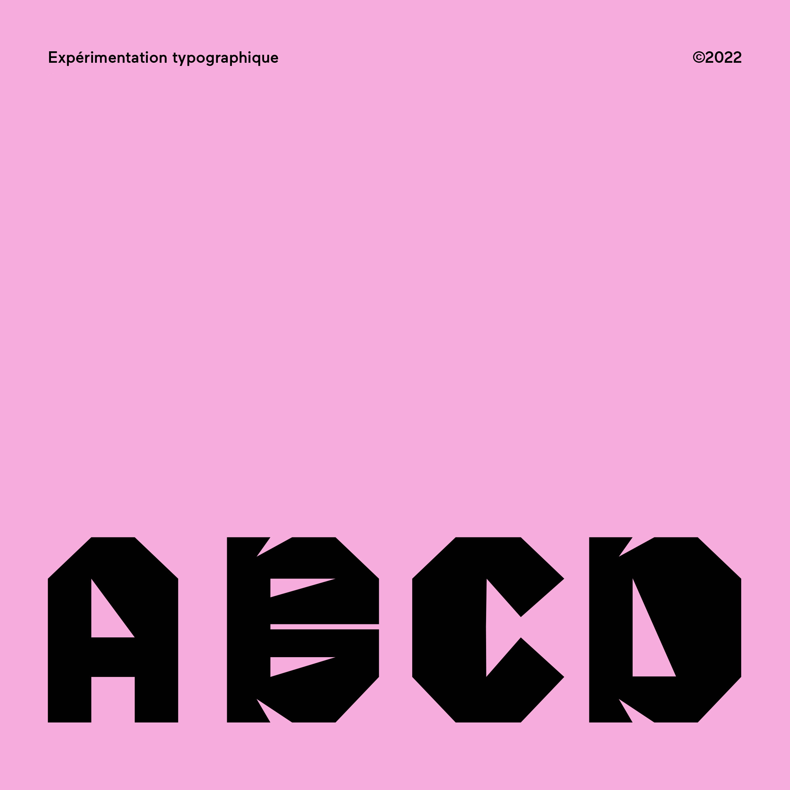
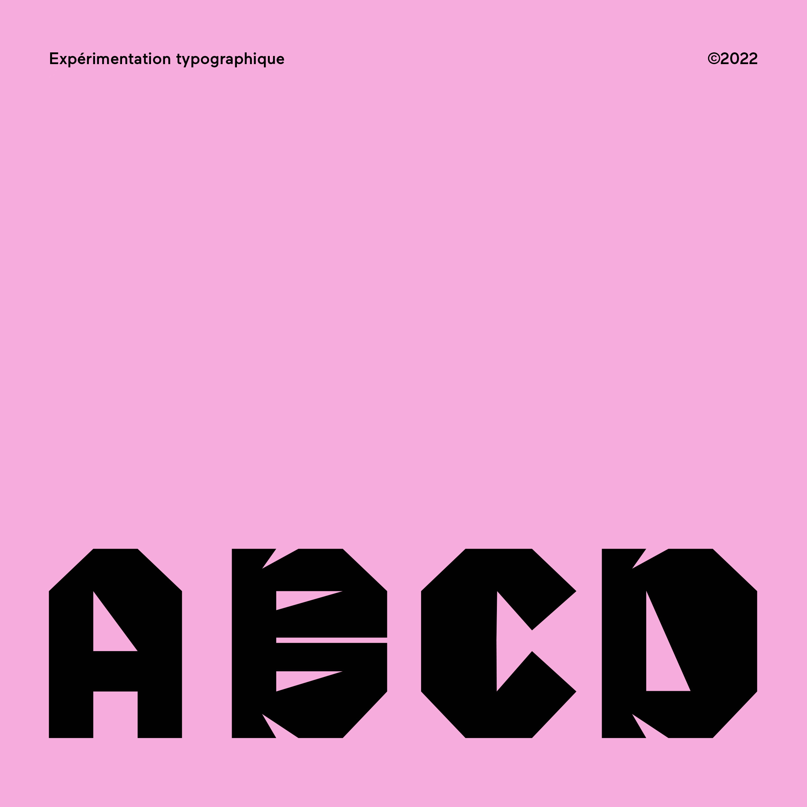

En dehors des projets scolaires j’ai voulu découvrir le domaine de la typographie, cette première expérimentation typographique a été élaborée d’après une grille géométrique. Les caractères sont inspirés du terme claustration «État de quelqu’un qui est enfermé dans un lieu clos».La typographie est pensée pour prendre de la place avec un trait brut et une harmonie des détails pour une bonne cohérence graphique. L’exercice a été très formateur pour comprendre comment se composent les caractères et comment je pouvais créer et utiliser une grille typographique.
 
